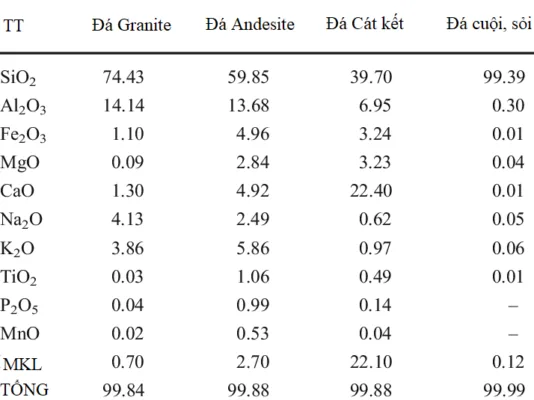

Sỏi sông là một trong những vật liệu tốt nhất để sản xuất cát nhân tạo, chúng có chất lượng cao và dễ khai thác hơn các loại vật liệu khác. Sỏi sông về bản chất thành phần, cấu tạo cũng giống như cát sông tự nhiên. Được khai thác lên nhưng về kích thước thì lớn hơn rất nhiều. Thực tế khi khai thác cát tự nhiên, thì vẫn có lẫn không nhiều thì ít sỏi sông. Vậy ứng dụng máy nghiền cát từ sỏi sông vào các ngành công nghiệp nào ?
Tại sao sỏi sông lại có thể nghiền thành cát nhân tạo, và cách lựa chọn máy nghiền cát nhân tạo từ sỏi sông đúng tiêu chuẩn
Đặc thù của sỏi sông là tính liên kết rất cao, cấu trúc không theo vân thớ nhất định. Cho nên sỏi cuội này được đánh giá là dai khó nghiền, mà nghiền thì độ ăn mòn thiết bị rất lớn. Do đó khi lựa chọn máy nghiền cát từ sỏi sông, phải cực kì lưu ý đến phần tiêu hao vật tư và điện năng.

Hơn nữa cát nhân tạo, màu sắc cũng rất giống cát tự nhiên. Chất lượng thì hơn hẳn các tự nhiên do loại bỏ hết tạp chất, kiểm soát được Module cỡ hạt. Nói tóm lại dù đặc điểm của sỏi sông đem đi nghiền cát nhân tạo có là như thế nào, thì hiệu quả kinh tế mà nó đem lại là không thể bàn cãi.
Công nghệ máy nghiền cát từ sỏi sôn xa xưa và hiện nay đang bộc lộ nhiều yếu điểm
Hiện nay để nghiền sỏi thành cát nhân tạo với chi phí rẻ nhất, các đơn vị đang sử dụng phổ biến các loại máy nghiền. Và cho rất nhiều yếu điểm đó là:
Máy nghiền búa văng – máy nghiền cát từ sỏi sông
Là loại máy sử dụng các búa văng với tốc độ cao. Tác động trực tiếp vào viên sỏi giúp làm hạ kích thước của viên sỏi về kích thước tiêu chuẩn của hạt cát thường tư 0-3.5 mm.

Nhược điểm:
Tổn hao thiết bị búa văng là rất lớn, thời gian hao mòn hết một bộ búa là 6-8 giờ làm việc. Nhiều mỏ sản xuất cát nhân tạo đã phải bán thanh lý loại này, vì chi phí sản xuất quá lớn.
Máy nghiền lô máy nghiền cát từ sỏi sông
Là loại máy sử dụng các quả lô tác động trực tiếp vào viên sỏi thông qua 2 quả lô, ưu điểm là chi phí đầu tư ban đầu thấp.
Nhược điểm:
Máy nghiền lô và máy nghiền búa, để sản xuất cát từ sỏi sông thì công suất cát thành phẩm nhỏ và yêu cầu đầu vào của sản phẩm là bé. Thường giao động ở mức 2-3 cm, hạt cát ra còn khá nhám tay. Không bảo đảm được tiêu chuẩn về tỉ lệ theo TCVN về cát nghiền. (Tiêu chuẩn Việt Nam TCVN9205:2012).
Các mỏ sỏi khu vực sông lô Phú Thọ trước đây, đã phải thanh lý toàn bộ các máy nghiền này để lắp đặt máy của Thanh Long JSC.
Máy nghiền cát từ sỏi sông cho hiệu quả nhất và tạo ra sản phẩm đạt tiêu chuẩn của Bộ Xây dựng
Hầu hết các loại máy nghiền dùng bộ phận kim loại để nghiền, nhưng máy nghiền cát Thanh Long JSC sử dụng công nghệ đá va đá. Sỏi và đá được đưa vào máy để nghiền nát chính nó. Việc nghiền tự sinh giúp giảm chi phí hơn các phương pháp nghiền tác động. Đây là sản phẩm bán ưu việt nhất trên thị trường. Hiện nay máy nghiền cát Thanh Long JSC là đơn vị sản xuất tiết kiệm dao nghiền nhất. Sự va đập tốc độ cao giúp cải thiện tính sắc cạnh và hình dạng của vật liệu. Làm cho quá trình sản xuất các sản phẩm cuối cùng đạt chất lượng cao nhất.